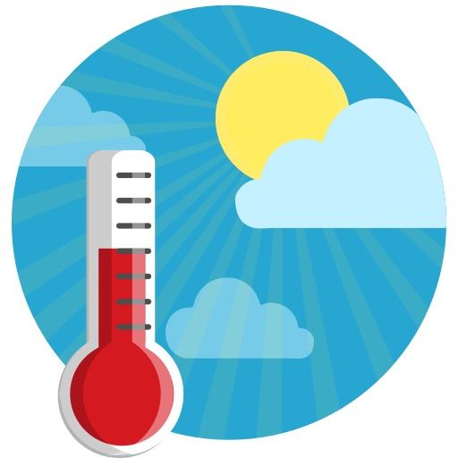

Target Audience
Target
The target audience for Paulo's Weather Website is for both people who love and hate Paulo Dallastra.
Personas
| Persona | Image | Expectation |
|---|---|---|
| Lovers | Checking how the day will be for Paulo, so they can be glad he is having a good day or give him support. | |
| Haters | Checking how the day will be for Paulo, so they can celebrate if he is having a bad day or feel bad because he is having a great day. |
Scenarios
- What is the weather going to be in Brazil since Paulo is there?
- How's the weather will look like when Paulo is having surgery?
- How's the weather when Paulo is getting back to the US?
- Will today's weather be good for Paulo today?
- Will today's weather make Paulo suffer today?